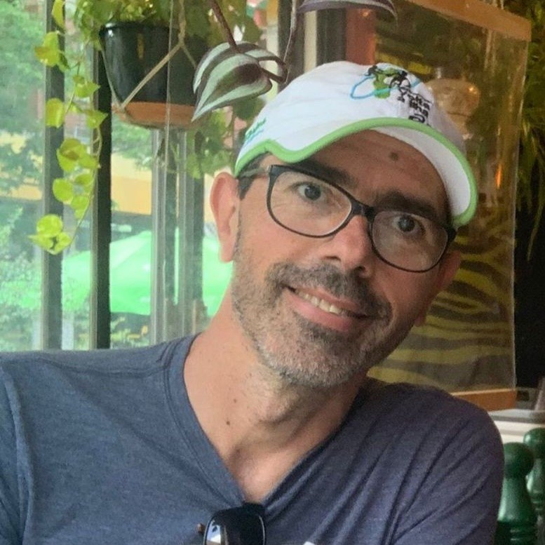

Luiz Eduardo
S. Oliveira
Professor, Department of Informatics
Federal University of Paraná (UFPR), Curitiba
Pattern recognition and machine learning — handwriting, texture, dynamic classifier selection, concept drift and open-world learning.
Bio
I earned my Ph.D. in Computer Science (Philosophiae Doctor Ph.D.) from the Université du Quebec, École de Technologie Supérieure in 2003. From 2004 to 2009, I served as a professor in the Graduate Program in Informatics at PUCPR. Since 2009, I’ve been a professor in the Department of Informatics at the Federal University of Paraná. Over the years, I’ve supervised and co-supervised more than 40 students and authored over 250 articles in specialized journals and international conference proceedings, boasting an h-index of 59. In 2003, I was honored with the excellence award for the best doctoral thesis from ETS/Université du Quebec, and in 2017, I received the IBM Faculty Award. My research focuses primarily on pattern recognition and machine learning. Since 2006, I have been a CNPq fellow.